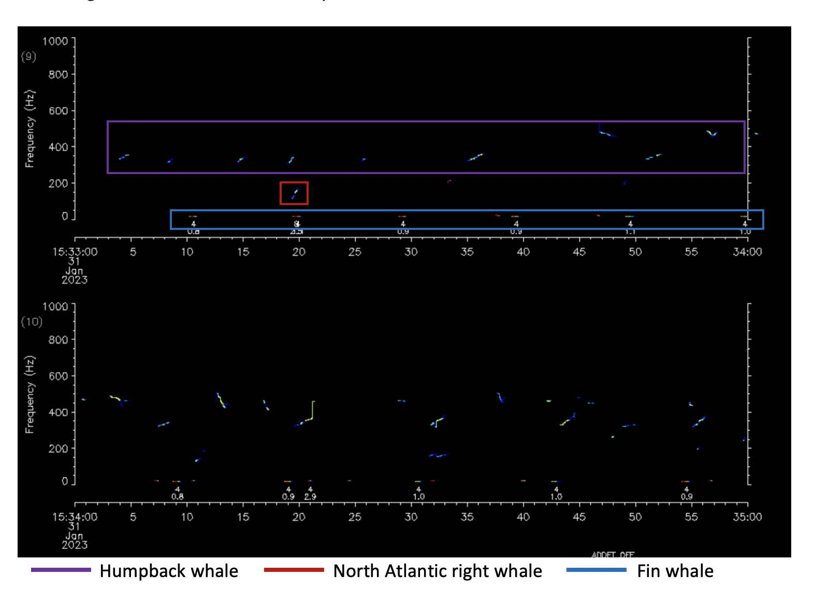

What’s new in the news
On the Web
NOAA offers answers to FAQs in the wake of increased Humpback whale mortality on the US east coast: Frequent Questions—Offshore Wind and Whales
A Featured Scientist

Dr. Helen Bailey was quoted in the article The Ocean Got so Loud That Dolphins Must Now ‘Shout’ Over Noise Pollution 19 January, 2023.
CBLOutreach (@CBL Outreach)Tweeted: #Dolphins will adjust their calls in the face of underwater noise pollution, with Helen Bailey, research professor at @UMCES, describing it to the BBC as “similar to when we shout louder when we are talking in a noisy bar.”
From Our Scientists
Dave Secor on the FRM project’s experimental design
The Music of Whales
Imagine yourself in a rainforest. The air is hot and humid, the smells of the environment surround you: damp soil, decomposing wood, and plants,so many different types of plants. Now imagine what you might hear; the croaks, barks, whirring of frogs, the chirp and buzz of insects, the songs and calls of birds, monkeys calling to each other with yips, screeches and shouts. So many different species being heard at the same time in the same ecosystem.
Where sound is such a vital part of marine mammals’ lives, it should be unsurprising that many different species can be vocalizing at the same time within the marine ecosystem, similarly to a terrestrial ecosystem. Every marine mammal has a distinct sound(s) they make that are unique to that species. For those who may not know much about the marine environment, they may find it remarkable to know that many different marine species can be vocalizing at the same time. The Ocean City, MD Real-time Whale Buoy transmitted data via satellite containing this exact scenario on 31 January, 2023. Three different baleen whale species were identified vocalizing within the same 15 minute period.

Almost like a of sheet of music this period depicts the composition of all the playing parts of a musical underwater. In the higher frequencies at 400Hz across the panels you can see the melody, the humpback song pattern, shown by pitchtracks (alike to notes on a music sheet) with upsweeps and downsweeps. And in the background the harmony of faint North Atlantic right whale upcalls at 200Hz above 20 seconds in the first panel and 11 seconds in the second panel. Finally, the fin whales with the bass, the part of the musical composition that human ears cannot hear because it is so low frequency. This sound is a steady pulse at 20Hz labeled with a four underneath. UMCES scientists are given a preview of this composition and will be able hear the audio after the recording data has been collected. For now, this is a reminder that no matter what ecosystem you are in, there is always the chance to hear many species at the same time. - Kirsten (Faculty Research Assistant)